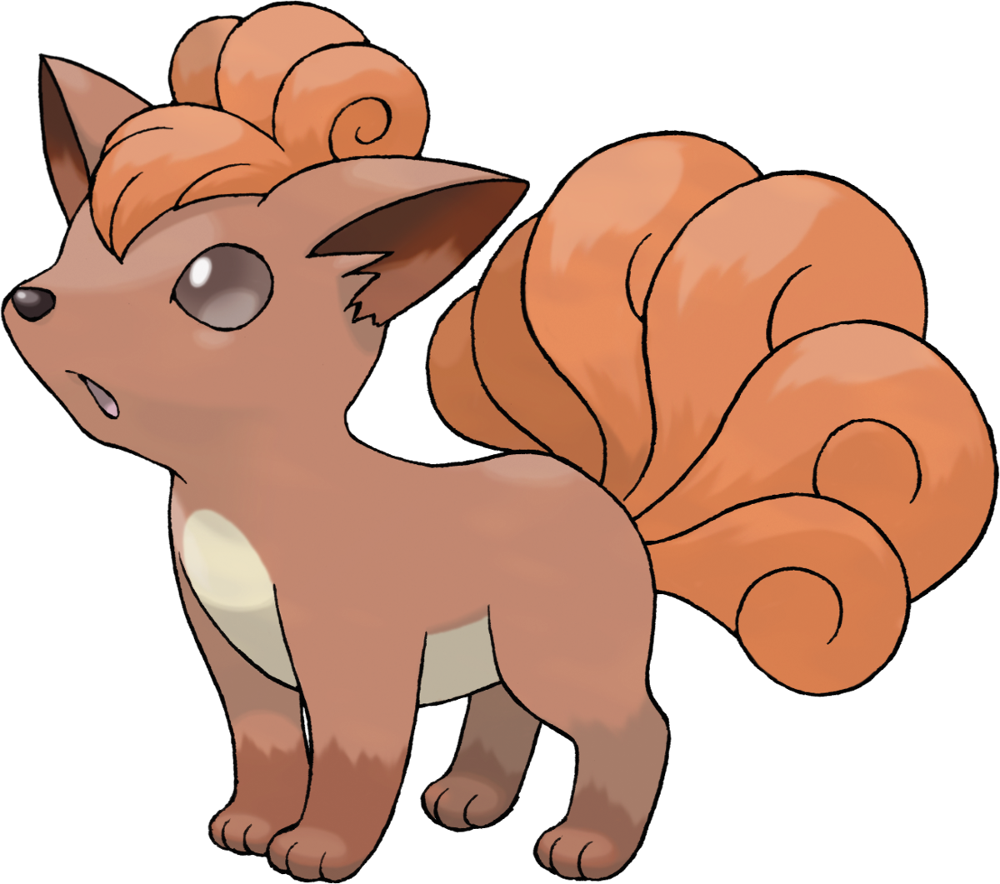

Notre chef de projetDéveloppeur web

Développeur web
FAQ
Comment puis-je faire une réservation ?
Veuillez effectuer une réservation par le biais du système de réservation de ce site web.
Veuillez noter que nous n'acceptons pas les réservations par téléphone.
Mon ami et moi pouvons nous asseoir l'un à côté de l'autre ?
Veuillez faire vos deux réservations au même nom et pour le même créneau horaire, puis appelez le Pokémon Café pour confirmer votre place.
Nous vous placerons si possible près les uns des autres, mais cela peut ne pas être possible en fonction des réservations déjà faites pour ce jour-là.
Les enfants d'âge préscolaire sont-ils comptés comme des adultes dans les réservations ?
Oui. Veuillez les compter dans les réservations.